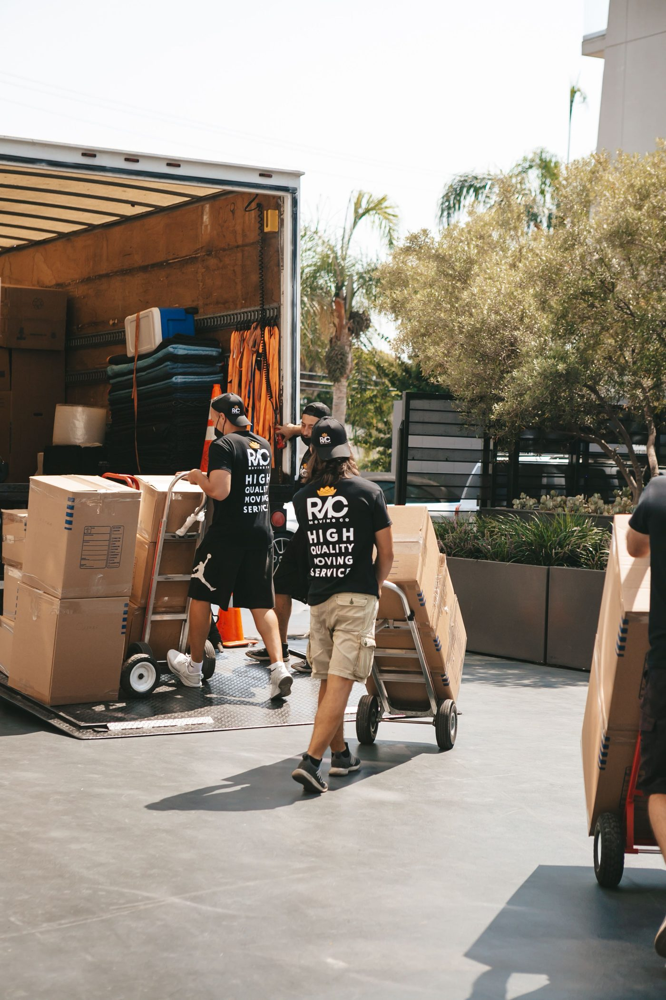
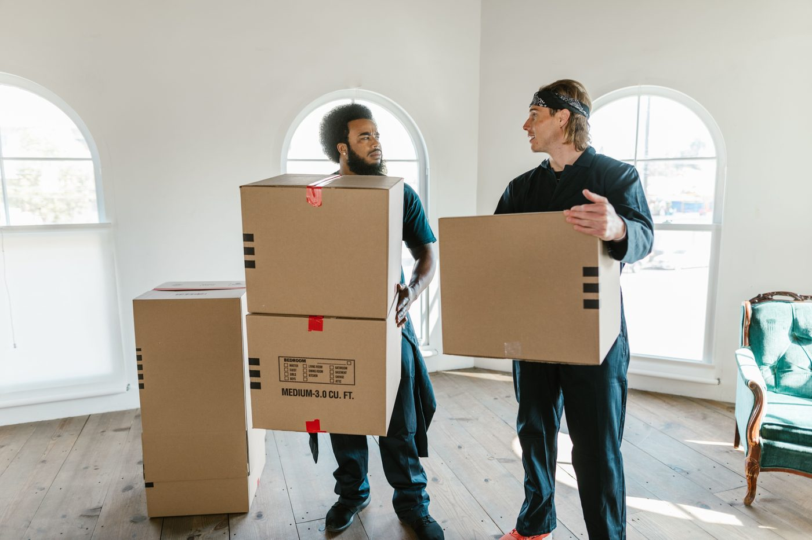

A moving company in Spokane
Dan the Moving Man offers full-service household moving, piano moving, piano sales, piano tuning and repair, and specialty item moving. Dan the Moving Man is Dan the Piano Man.
Dan the Moving Man sits at 104 N Madelia St in Spokane. The company offers full-service household moving, piano moving, piano sales, piano tuning and repair, and specialty item moving.


104 N Madelia St, Spokane, WA 99202
Monday to Friday, 8:00 AM to 5:00 PM